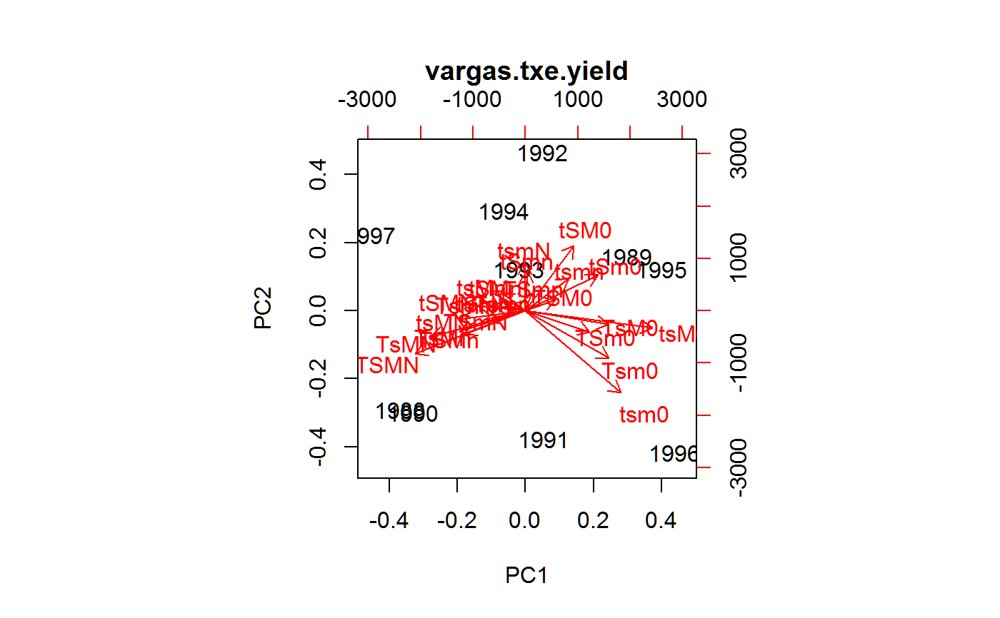
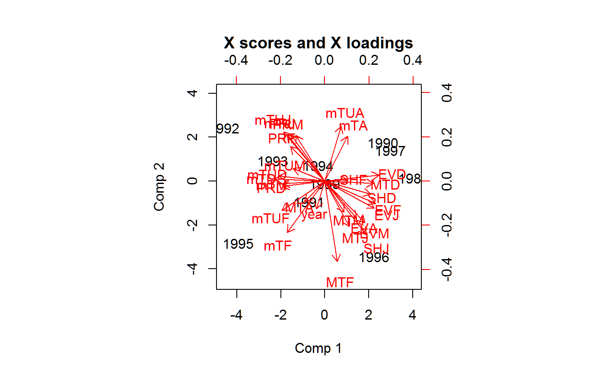

Treatment x environment interaction in agronomy trials
vargas.txe.RdTreatment x environment interaction in agronomy trials
data("vargas.txe.covs") data("vargas.txe.yield")
Format
The 'vargas.txe.covs' data has 10 years of measurements on 28 environmental covariates:
yearyear
MTDmean maximum temperature in December
MTJmean maximum temperature in January
MTFmean maximum temperature in February
MTMmean maximum temperature in March
MTAmean maximum temperature in April
mTDmean minimum temperature in December
mTJmean minimum temperature in January
mTFmean minimum temperature in February
mTMmean minimum temperature in March
mTAmean minimum temperature in April
mTUDmean minimum temperature in December
mTUJmean minimum temperature in January
mTUFmean minimum temperature in February
mTUMmean minimum temperature in March
mTUAmean minimum temperature in April
PRDtotal monthly precipitation in December
PRJtotal monthly precipitation in Jan
PRFtotal monthly precipitation in Feb
PRMtotal monthly precipitation in Mar
SHDsun hours per day in Dec
SHJsun hours per day in Jan
SHFsun hours per day in Feb
EVDtotal monthly evaporation in Dec
EVJtotal monthly evaporation in Jan
EVFtotal monthly evaporation in Feb
EVMtotal monthly evaporation in Mar
EVAtotal monthly evaporation in Apr
The 'vargas.txe.yield' dataframe contains 240 observations on three variables
yearYear
trtTreatment. See details section
yieldGrain yield, kg/ha
Details
The treatment names indicate:
| T | deep knife |
| t | no deep knife |
| S | sesbania |
| s | soybean |
| M | chicken manure |
| m | no chicken manure |
| 0 | no nitrogen |
| n | 100 kg/ha nitrogen |
| N | 200 kg/ha nitrogen |
Source
Vargas, Mateo and Crossa, Jose and van Eeuwijk, Fred and Sayre, Kenneth D. and Reynolds, Matthew P. (2001). Interpreting Treatment x Environment Interaction in Agronomy Trials. Agron. J., 93, 949-960. Table A1, A3. https://doi.org/10.2134/agronj2001.934949x
Used with permission of Jose Crossa.
Examples
library(agridat) data(vargas.txe.covs) data(vargas.txe.yield) libs(reshape2) libs(lattice) redblue <- colorRampPalette(c("firebrick", "lightgray", "#375997")) Z <- vargas.txe.yield Z <- acast(Z, year ~ trt, value.var='yield') levelplot(Z, col.regions=redblue, main="vargas.txe.yield", xlab="year", ylab="treatment", scales=list(x=list(rot=90)))# Double-centered like AMMI Z <- sweep(Z, 1, rowMeans(Z)) Z <- sweep(Z, 2, colMeans(Z)) # Vargas figure 1 biplot(prcomp(Z, scale.=FALSE), main="vargas.txe.yield")# Now, PLS relating the two matrices U <- vargas.txe.covs U <- scale(U) # Standardized covariates libs(pls) m1 <- plsr(Z~U) # Vargas Fig 2, flipped vertical/horizontal biplot(m1, which="x", var.axes=TRUE)